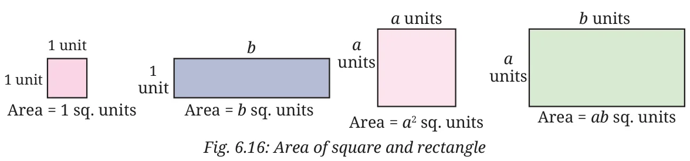

From perimeter, we move to area, i.e., to the ‘amount of space’ occupied by a two-dimensional region in a plane.
Measurement is always relative to something we call a unit. For area, the unit is a \(1 \times 1\) square; its area is taken to be 1 unit\(^{2}\) (also written as 1 sq. unit). You know from Grade 8 that the area of a rectangle with sides \(a\) units and \(b\) units is \(ab\) sq. units (Fig. 6.16).
